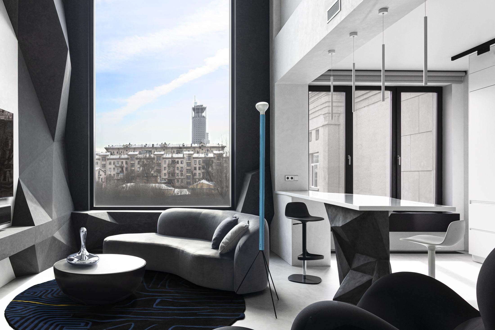

	{{> header }}

	<section class="project__enter">
		<div class="container">
			<div class="project__enter--wrap">
				<h1>Интерьер и Ремонт двухэтажной квартиры в ЖК Golden House</h1>
				
			</div>
			<div class="project__details">
				<div class="project__detail--col">
					<div class="project__details--title">О проекте</div>
				</div>
				<div class="project__detail--col">
					<div class="project__detail--group">
						<div class="project__detail--title">Статус</div>
						<div class="project__detail--text">Реализован</div>
					</div>
					<div class="project__detail--group">
						<div class="project__detail--title">Год реализации</div>
						<div class="project__detail--text">2023</div>
					</div>
				</div>
				<div class="project__detail--col">
					<div class="project__detail--group">
						<div class="project__detail--title">Тариф</div>
						<div class="project__detail--text">Премиум</div>
					</div>
					<div class="project__detail--group">
						<div class="project__detail--title">Площадь</div>
						<div class="project__detail--text">130 м<sup>2</sup></div>
					</div>
				</div>
			</div>
			<div class="project__desc">
				<p>Встретить «своего» заказчика, чей запрос будет глубоко отзываться и радовать дизайнера, – большая удача. Владелец этой двухуровневой квартиры в московском ЖК «Golden House» оказался именно таким: его смелое видение нестандартного интерьера требовало подходящего специалиста, поэтому он обратился к Варваре Чесноковой из студии «Wee дизайна».</p>
			</div>
		</div>
	</section>

	{{> footer }}